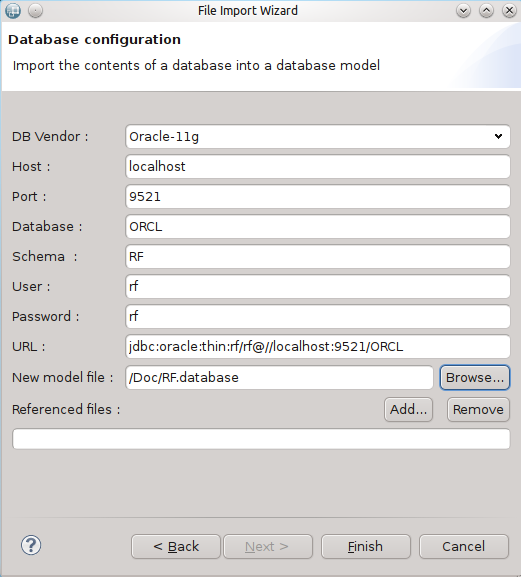
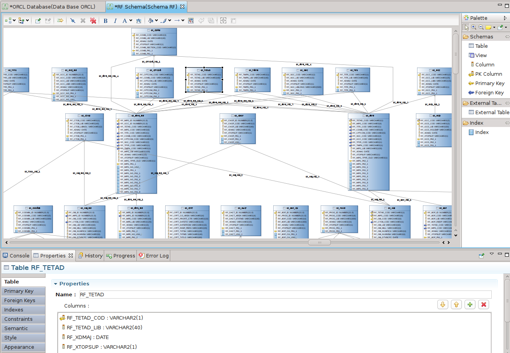
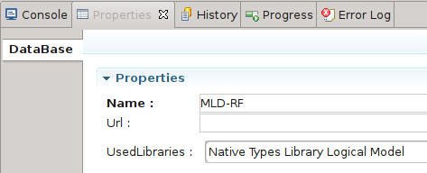
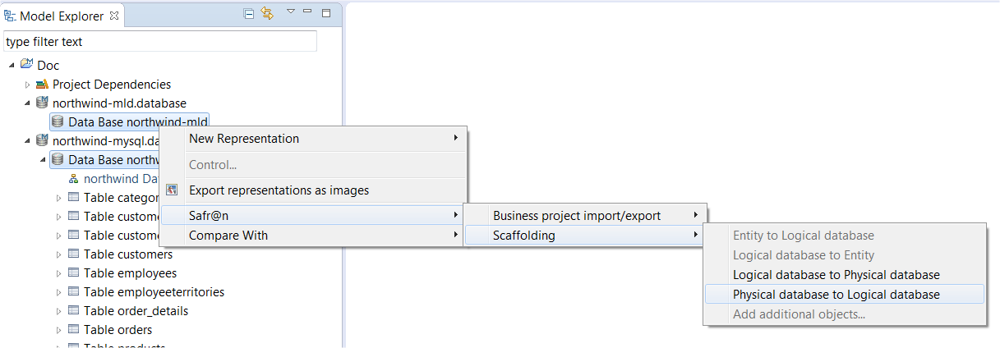
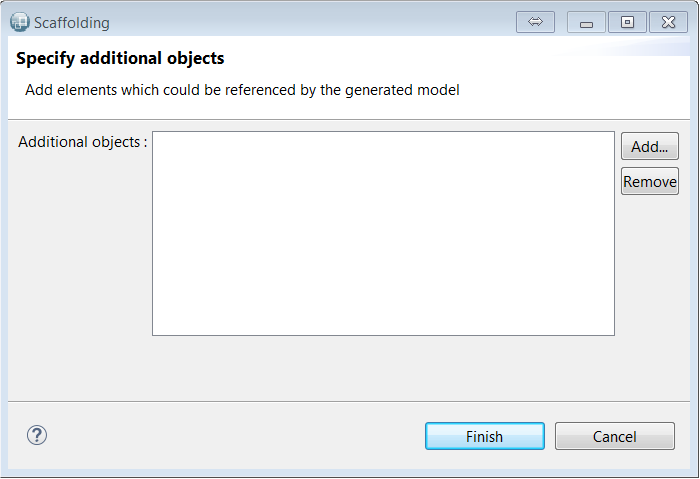

© Obeo 2012, 2016 - All rights reserved. This program and the accompanying materials are made available under the terms of the Eclipse Public License v1.0
Authors Stéphane Thibaudeau
Contact stephane.thibaudeau@obeo.fr
Le
Scaffolding est une technique popularisée par le socle de développement
Ruby on Rails qui vise à produire des livrables (code, modèle, documentation) à partir des informations structurelles d’une base de données.
En l’occurrence, l’outillage de scaffolding Safr@n propose les fonctionnalités suivantes :
Cet outil permet d’initialiser un MPD à partir d’une base de donnée existante. Un assistant est accessible via le menu
File > Import … > Database > Import Database. Voici un exemple permettant d’extraire les informations du schéma Oracle
RF :

Il est à noter qu’il est possible de référencer (à l’aide de la zone
Referenced file) des MPD existants. Ce référencement est utile lorsque vous souhaitez charger un schéma qui comporte des clés étrangères pointant sur des tables appartenant à une autre schéma.
Le résultat obtenu est le suivant :
Pour manipuler graphiquement le contenu d’un fichier
.database, vous devez glisser-déposer votre fichier dans la vue
Model Explorer d’Obeo Designer afin de créer une session de travail.
Vous devez ensuite sélectionner le point de vue
Database dans la boite de dialogue qui vous est proposée.
Ensuite ouvrez le diagramme
Database Diagram pour visualiser le contenu de votre fichier. Le résultat obtenu est le suivant :

L'éditeur ci-dessus propose :
L'édition de Modèle Physique de Données se fait à l’aide du modeleur présenté précédemment. Un MPD est caractérisé par l’utilisation d’une librairie de type spécifique à un moteur de base de données : Oracle ou MySQL. Cette librairie est spécifiée à l’aide de la propriété suivante disponible sur l'élément Database :

L'édition de Modèle Logique de Données se fait à l’aide du modeleur présenté précédemment. Un MLD est caractérisé par l’utilisation d’une librairie de type logique indépendante de tout moteur de base de données. Cette librairie est spécifiée à l’aide de la propriété suivante disponible sur l'élément Database :

La sélection de cette librairie de types est également proposée dans l’assistant de création de modèle database, cf. capture ci-dessous :

Il est a noter que la liste des types proposés dans chacune des librairies de types est paramétrable.
L’outillage de comparaison permet de comparer deux versions de MPD, soit deux fichiers stockés localement, soit une version locale avec une autre version stockée dans un référentiel de type subversion. L’outillage se base sur EMF Compare et fournit une extension permettant d’améliorer la pertinence de la comparaison sur ce type particulier de modèle.
Pour comparer deux versions de MPD, sélectionnez les deux fichiers à comparer et utiliser le menu
Compare With > Each Other proposé dans le menu contextuel. Lorsque vous utilisez la comparaison de fichiers locaux (par opposition à la comparaison via l’outillage subversion) EMF Compare utilise les fichiers dans l’ordre alphabétique. Par conséquent, vous devez les nommer de manière à ce que la version la plus récente de votre MPD se trouve en première position. Cf. l’exemple ci-dessous :

Génération des scripts de modification
Il est possible de générer les scripts SQL permettant de passer d’une version d’une base de données à une suivante. Pour cela il faut commencer par comparer les 2 modèles de bases de données en s’assurant que le plus récent est en première position (cf. paragraphe précédent).
Une fois la comparaison effectuée, vous pouvez demander la génération du script SQL en cliquant sur le bouton Generate SQL Scripts présent dans la barre d’outils. Ainsi le script généré vous permettra de mettre à jour le schéma correspondant au MPD le plus ancien :

Un répertoire sql, contenant l’ensemble des scripts, sera créé à la racine du projet.
Génération complète
Il est possible de générer les scripts SQL pour générer complètement une base de données. Pour cela il suffit d’utiliser le menu clic droit sur le modèle et sélectionner Safr@n > Generate SQL Scripts

Les transformations suivantes sont proposées afin d’initialiser un modèle à partir d’un autre :
Le mode opératoire est le même pour chacune des transformations.
Pour lancer une transformation, le modèle cible doit exister. Pour une transformation d’un MPD en MLD par exemple il vous faudra commencer par créer un MLD vide avant toute chose.
Vous devez ensuite sélectionner un objet source et un objet cible en dépliant les modèles dans la vue Model Explorer. Si vous sélectionnez les fichiers le traitement ne pourra pas être lancé.
Pour un MPD ou un MLD, les objets source ou cible doivent être des
Data Base ou des
Schema.
Pour un modèle d’entités, les objets source ou cible doivent être des
Entities ou des
Namespace.
!

Une fois le traitement exécuté, un message de confirmation s’affiche. Un modèle contenant les informations de scaffolding est créé dans le répertoire scaffold. Ce modèle peut être utilisé pour lancer un nouveau traitement de scaffolding sur les mêmes éléments.
Une transformation peut être lancée directement depuis un modèle de scaffold :
Les transformations proposées dépendent des objets source et cible utilisés par le modèle de scaffolding.
Un menu permet également d’ajouter des ressources pour résoudre les dépendances externes comme lorsque l’assistant est utilisé.
A noter que lorsque vous lancez une transformation en sélectionnant des objets source et cible pour lesquels un modèle de scaffold existe déjà, il vous est proposé d’utiliser le modèle existant ou d’en créer un nouveau.
Les équivalences entre les types logiques et physiques, etc … ainsi que les règles de nommage sont paramétrables.
Aussi, dans le cas où vous disposez déjà d’une version du modèle cible nous vous conseillons d’effectuer la transformation vers un nouveau modèle puis d’utiliser l’outillage de comparaison/fusion afin de gérer l’incrémentalité des modifications. Prenons un exemple pour illustrer ce scénario :